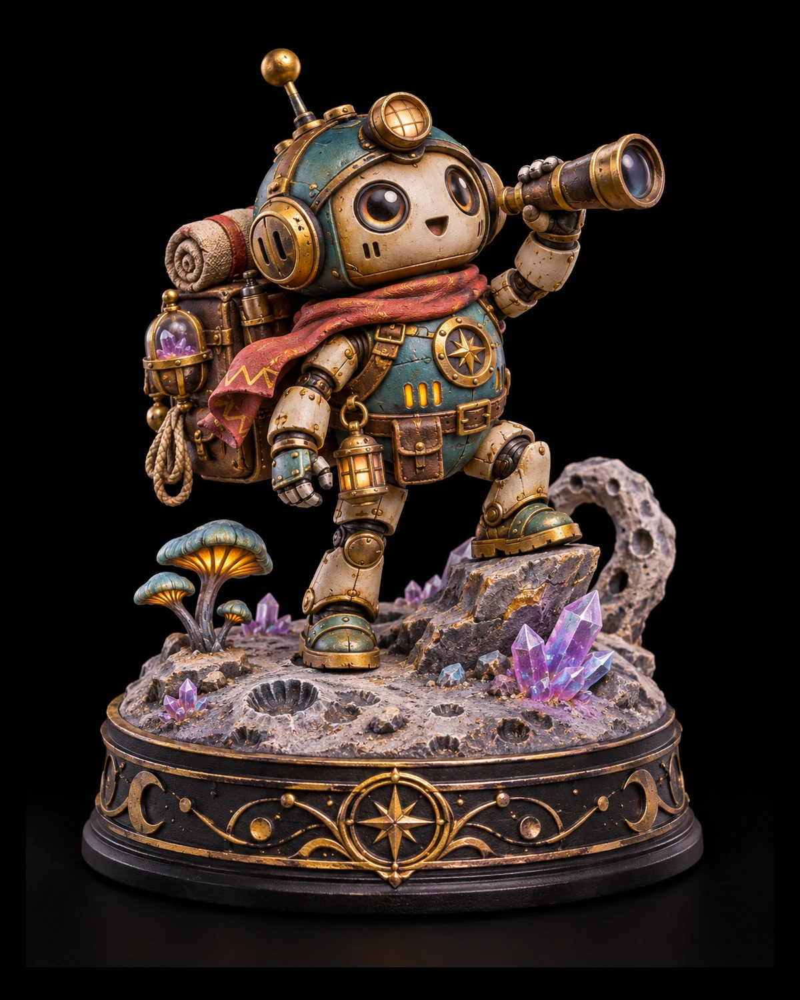

Sterrenrobot
Een kleine retro-robot met bronskleurige en turquoise details op een buitenaardse rotsbodem. Een decoratief resinbeeld op een bijpassende dioramavoet, met de hand geschilderd en afgewerkt.
Handgeschilderd, in drie formaten
- Klein: circa 15 cm — € 34,95
- Middel: circa 20 cm — € 49,95
- Groot: circa 25 cm — € 69,95
- Resinbeeld inclusief bijpassende dioramavoet.
- Alleen volledig handgeschilderd en afgewerkt verkrijgbaar.
- Decoratief verzamelobject voor binnen; geen speelgoed.
Van voorbeeld naar jouw beeld
We bespreken de uitvoering op basis van dit ontwerpvoorbeeld voordat je bestelt. Elk beeld wordt afzonderlijk afgewerkt; kleine verschillen in kleur, penseelstreken en details horen daarbij.
Prijs, materiaaluitvoering, afmetingen en productietijd bevestigen we vooraf. Zet het beeld buiten direct zonlicht en warmte, behandel uitstekende details voorzichtig en stof het af met een zachte droge kwast.
Een vraag over dit beeld? Neem contact op →Levertijd en bedenktijd
Levertijd: binnen 14 dagen na je bestelling, afhankelijk van beschikbaarheid. Verzending met PostNL of DHL, met track & trace.
Maatwerk: kies je voor personalisatie (naam, tekst, logo, eigen ontwerp of eigen maat), dan wordt het product speciaal voor jou gemaakt en geldt geen herroepingsrecht (art. 6:230p sub f BW). Zonder personalisatie heb je 14 dagen bedenktijd na ontvangst. Zie de algemene voorwaarden en het modelformulier voor herroeping.
Productveiligheid en fabrikant
Fabrikant: Makers 3D Labs (handelsnaam van Bruwin Solutions), Houtzaagmolen 102, 2986 GE Ridderkerk, Nederland · info@makers3dlabs.nl · KvK 42219037 · Btw-id NL005594435B45
Waarschuwingen en gebruik:
- Decoratief product van uitgehard kunsthars. Geen speelgoed.
- Niet geschikt voor contact met voedsel.
- Bevat mogelijk kleine onderdelen: niet geschikt voor kinderen onder 3 jaar.
- Niet blootstellen aan hoge temperaturen (boven ca. 50 °C) of langdurig fel zonlicht; het materiaal kan vervormen of verkleuren.
- Handbeschilderde delen alleen droog of licht vochtig afnemen.
Elk product wordt in Nederland op bestelling gemaakt. Vragen over veiligheid of een melding? Mail ons via info@makers3dlabs.nl.